Sobre
Ficamos felizes em recebê-lo!
Este apartamento foi pensado para oferecer conforto, praticidade e uma estadia memorável.
Destaques do Imóvel:
- Ambientes modernos e arejados, com excelente iluminação natural que cria uma atmosfera acolhedora.
- Cozinha planejada para tornar seu dia a dia mais prático e eficiente, equipada com tudo que você precisa.
- Varanda agradável, perfeita para relaxar e apreciar a vista da cidade.
- Acabamentos de alto padrão, que conferem sofisticação e aconchego ao ambiente.


Checkin
A partir das 14h
A partir das 14h
Checkin
A partir das 14h
A partir das 14h
Comodidades
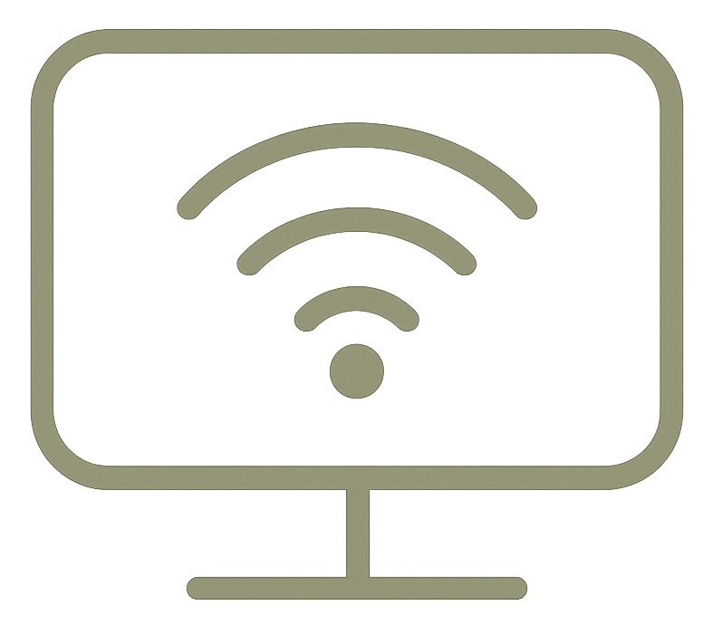
TV Streaming
Música - Alexa
Livros
Finanças
Aventura
Motivacional
Wi-Fi - 1 GIGA
Purificador de Água
Liquidificador
Sanduicheira
Cafeteira
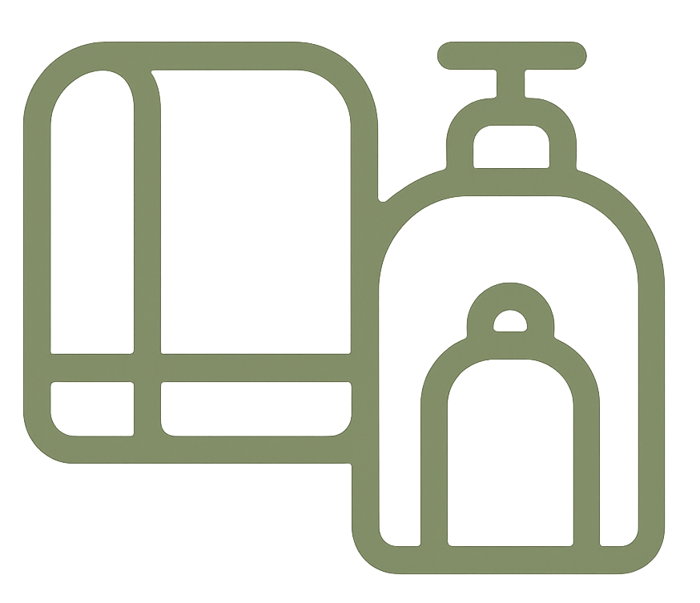
Toalhas de Banho
Shampoo / Sabonete
Ar Condicionado
Locais Úteis
Mercados e Conveniência
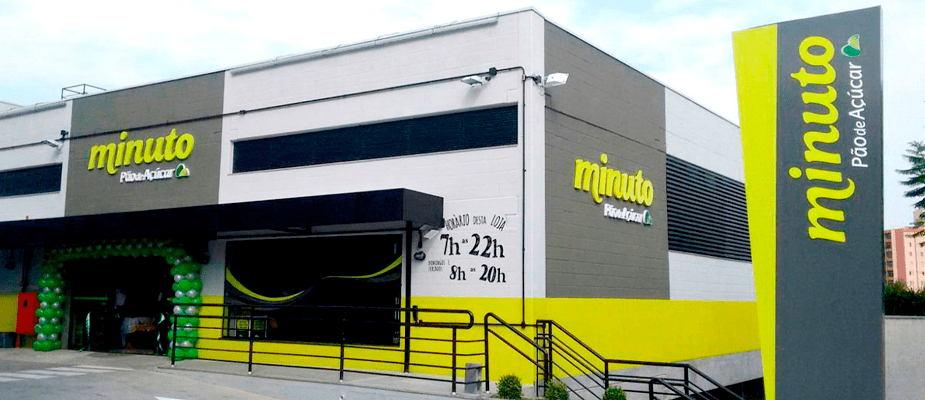

Transporte Público
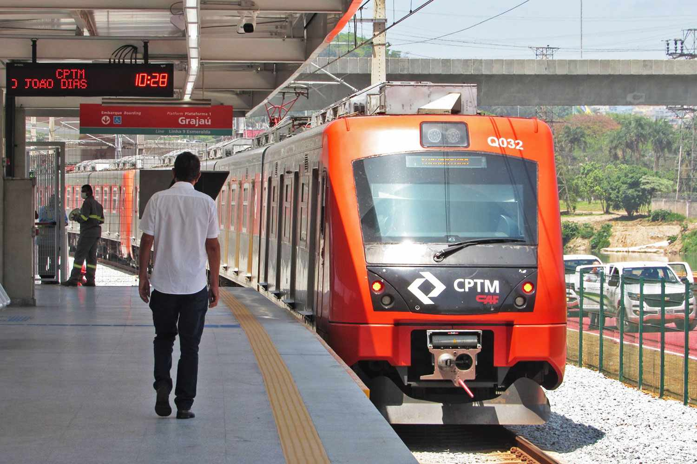
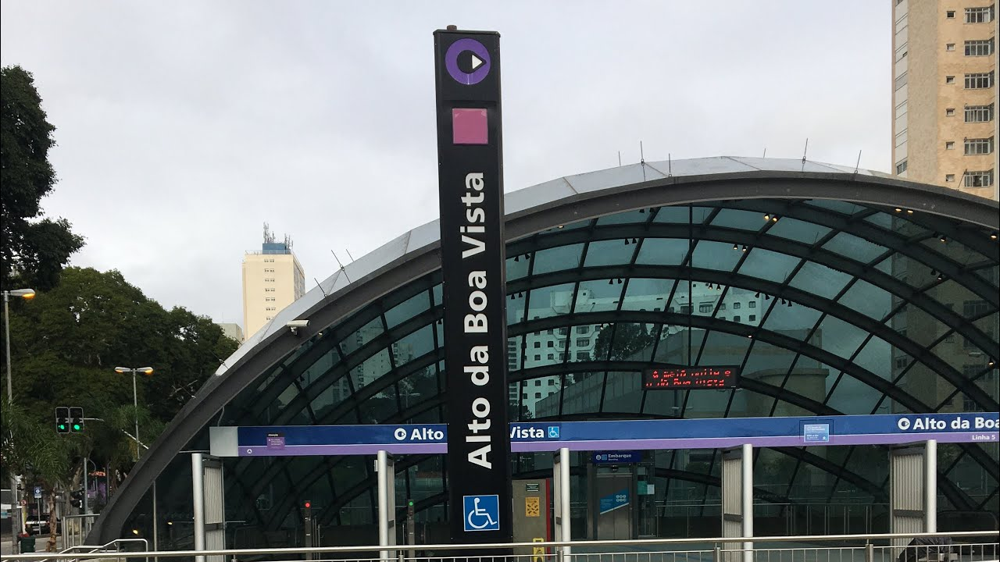
Shoppings e Compras
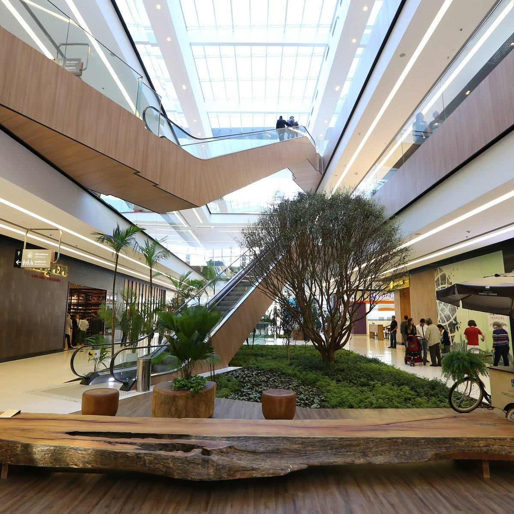
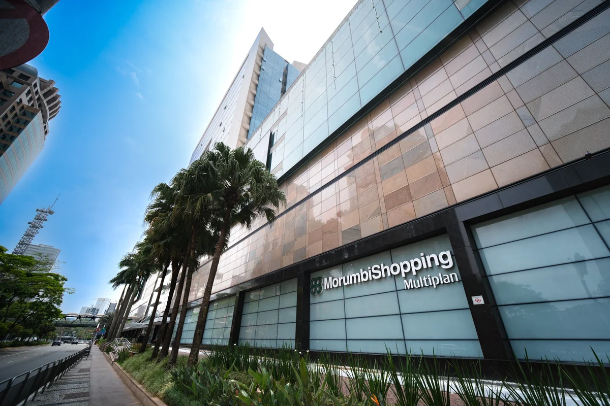
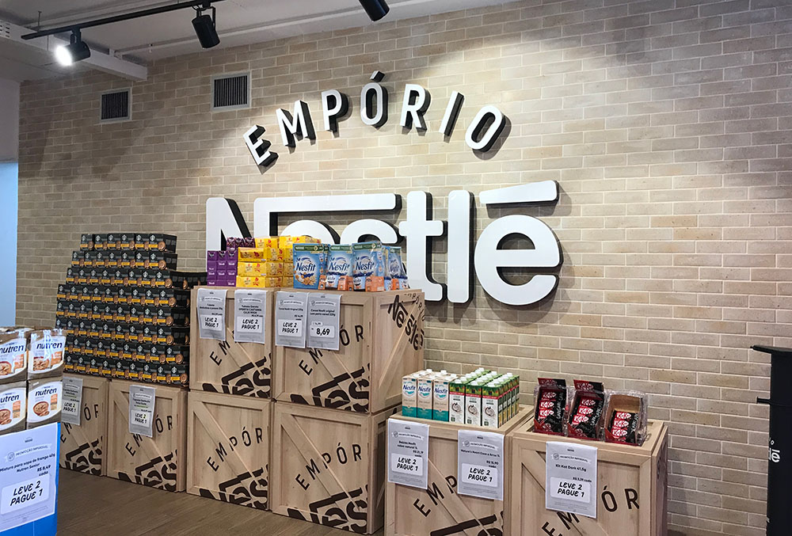
Eventos e Cultura
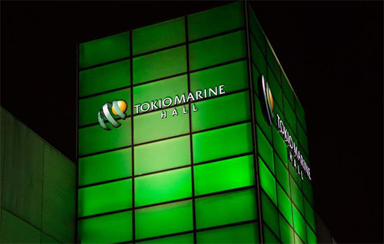
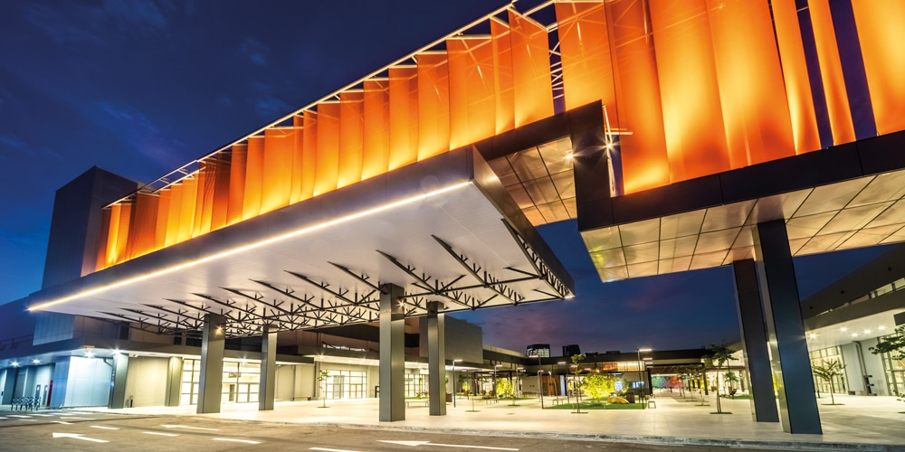
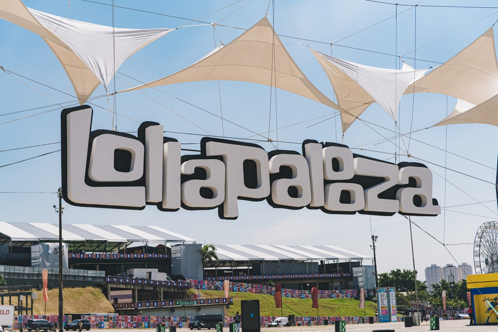
Serviços Institucionais
Check-In / Check-Out
Horários e instruções...
Regras do Imóvel e Condomínio
...
Estacionamento
Informações sobre vaga e alternativas...
Perguntas Frequentes
...